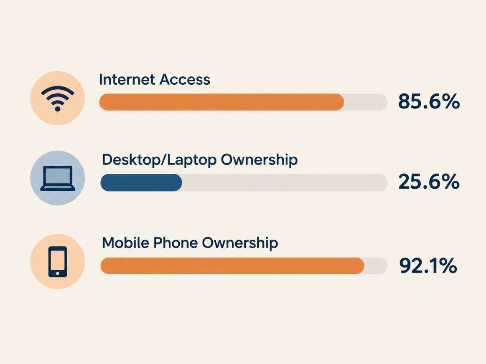

Two months ago, I met a young entrepreneur at my local run club in Pietermaritzburg whose six-year-old business had hit a bottleneck because it had no system to run on. He operated solo across construction, medical supplies, media production and marketing yet lacked structure. When his company restructured into a media and communications business, he could not justify hiring a developer to build the system he needed. Until I built him a custom CRM prototype using an AI tool to show him what was possible.
This gap is not unique. South African entrepreneurs face prohibitive barriers to accessing business systems. MO Agency estimates that consulting, set-up and training prices range from R10 000 – R250 000, customisation and integration ranges between R30 000 – R500 000 and the data migration would range around R10 000 – R100 000 depending on the volume and complexity of the data. With in the South African context, a score of 3.4/10 was captured for ease of access to entrepreneurial finance. Most small ventures cannot afford these costs. What I had was a subscription costing a fraction of what such a system would sell for and a tool that allows humans to describe the business problem in plain language and bring the vision to life.
This is vibe coding: a software development paradigm that allows a developer to express their intentions in creating a software product using natural language in a GenAI LLM. I argue this belongs to the Fifth Industrial Revolution (5IR). The Fourth Industrial Revolution brought IoT, robotics and bringing in interfaces between physical and systems. In essence, the takeaway from the 4IR is about automation replacing human tasks. The 5IR shifts focus to human-machine collaboration, placing creativity and judgement at the centre. Vibe coding fits this description given that this tool doesn’t replace the person, it turns them into working code.
The evidence synthesised is mixed. Experienced developers can work more efficiently than before but there are dangers for experienced and inexperienced vibe coders. For inexperienced developers, vibe coding allows software development without understanding underlying logic. This hinders debugging skills. Students can’t fully distinguish between a well-designed solution and a visually appealing yet faulty one. More critically, developing and publishing applications without security measures exposes entities to a legal liability. Section 99 of the Protection of Personal Information Act allows data subjects to institute civil action for damages for breaches.
So, is South Africa ready? While 85.6% of households have internet access, only 25.6% own a desktop or laptop and 92.1% own a mobile phone, making mobile phones the primary tool for most South Africans. However, according to the IITPSA ICT Skills Survey, South Africa faces a 27% shortage in information security skills precisely the expertise needed to audit vibe-coded systems. This raises demand for this skillset and creates an opportunity. Rather than excluding non-developers, vibe coding can democratise software creation if paired with proper security review. The 5IR’s promise of human- machine collaboration is real but only if we build the auditing capacity to match.

Yet these national figures hide a real variation. A vibe coder in a well-connected metro has far easier access to reliable network connection, power and security expertise than the one in a rural province. Vibe coding’s promise is not yet equally available to every South African and closing that gap is the next challenge.
References
- Department of Communications and Digital Technologies. (2025, February 20). Minister Solly Malatsi takes action to lower smart device costs. DCDT. https://www.dcdt.gov.za/media-statements-releases/563-minister-solly-malatsi-takes-action-to-lower-smart-device-costs.html
- Global Entrepreneurship Monitor. (2026). New GEM South Africa National Report: Early-stage Entrepreneurs are Growing into Established Businesses. GEM Consortium. https://www.gemconsortium.org/news/new-gem-south-africa-national-report:-early-stage-entrepreneurs-are-growing-into-established-businesses
- Horvat, M. (2025). What is Vibe coding and when should you use it (or not)? TechRxiv. https://www.techrxiv.org/doi/pdf/10.36227/techrxiv.175459780.03758839/v1
- Institute of Information Technology Professionals South Africa. (2024). 2024 IITPSA ICT Skills Survey and Research Report. IITPSA. https://www.iitpsa.org.za/wp-content/uploads/2024/10/2024-IITPSA-ICT-Skills-Survey-and-Research-Report.pdf
- MO Agency. (2024). What does it cost to implement HubSpot CRM? ITWeb. https://www.itweb.co.za/article/what-does-it-cost-to-implement-hubspot-crm/DZQ587V8r8pqzXy2
- Republic of South Africa. (2013). Protection of Personal Information Act 4 of 2013. Government Gazette, 37067. https://www.gov.za/sites/default/files/gcis_document/201409/3706726-11act4of2013popi.pdf
- Statistics South Africa. (2026). General Household Survey 2025. Stats SA. https://www.statssa.gov.za/publications/P0318/MEDIA%20RELEASE%20-%20%20GHS%202025%20.pdf
- World Economic Forum. (2025, January 13). Technology convergence is leading the way for the fifth industrial revolution. WEF. https://www.weforum.org/stories/emerging-technologies/technology-convergence-is-leading-the-way-for-accelerated-innovation-in-emerging-technology-areas/